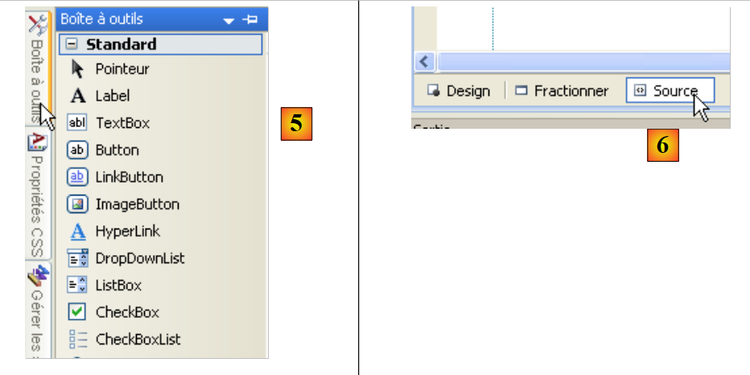
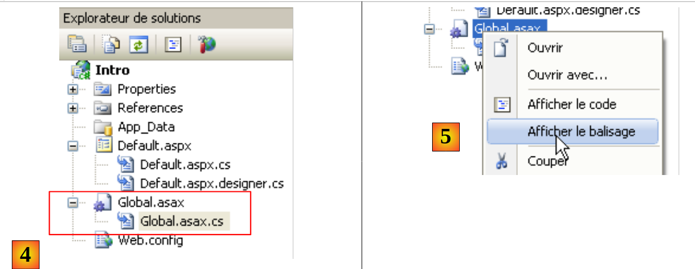
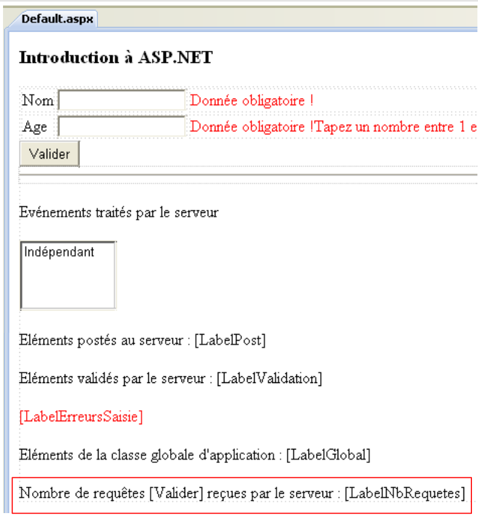
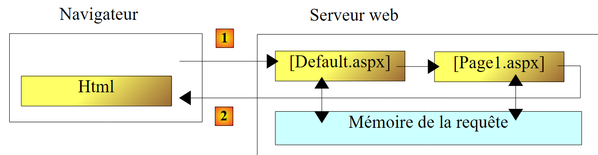
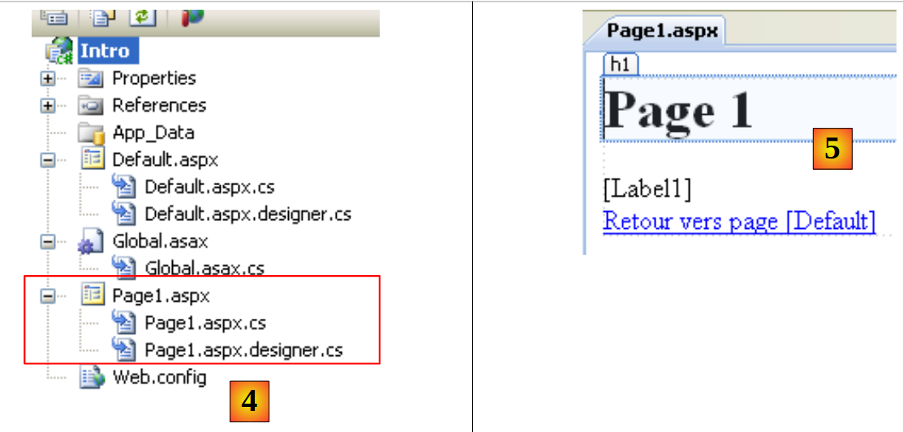
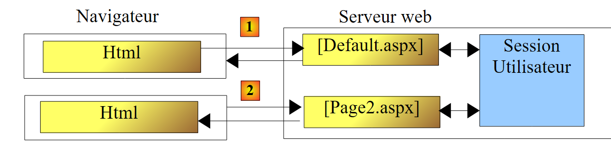

2. Uma breve introdução ao ASP.NET
Aqui, pretendemos apresentar, através de alguns exemplos, os conceitos do ASP.NET que serão úteis mais adiante neste documento. Esta introdução não aborda as complexidades da comunicação cliente/servidor numa aplicação web. Para isso, pode ler:
- Programação ASP.NET [Desenvolvimento Web com ASP.NET 1.1]
Esta introdução destina-se a quem deseja começar rapidamente, aceitando — pelo menos inicialmente — que alguns pontos potencialmente importantes possam ficar por explicar. O resto deste documento irá explorar esses pontos com maior profundidade. Quem estiver familiarizado com o ASP.NET pode saltar diretamente para a Secção 3.
2.1. Um projeto de exemplo
2.1.1. Criação do projeto
 |
- Em [1], crie um novo projeto com o Visual Web Developer
- Em [2], selecione um projeto Web em Visual C#
- Em [3], especifique que pretende criar uma aplicação Web ASP.NET
- Em [4], nomeie a aplicação. Será criada uma pasta para o projeto com este nome.
- Em [5], especifique a pasta pai da pasta do projeto [4]
 |
- Em [6], o projeto criado
- [Default.aspx] é uma página web criada por predefinição. Contém tags HTML e tags ASP.NET
- [Default.aspx.cs] contém o código para lidar com eventos acionados pelo utilizador na página [Default.aspx] apresentada no navegador
- [Default.aspx.designer.cs] contém a lista de componentes ASP.NET para a página [Default.aspx]. Cada componente ASP.NET colocado na página [Default.aspx] gera uma declaração para esse componente em [Default.aspx.designer.cs].
- [Web.config] é o ficheiro de configuração do projeto ASP.NET.
- [References] é a lista de DLLs utilizadas pelo projeto web. Estas DLLs são bibliotecas de classes que o projeto necessita de utilizar. Em [7] encontra-se a lista de DLLs incluídas por predefinição nas referências do projeto. A maioria delas é desnecessária. Se o projeto necessitar de utilizar uma DLL não listada em [7], esta pode ser adicionada através de [8].
2.1.2. A página [Default.aspx]
Se executar o projeto utilizando [Ctrl-F5], a página [Default.aspx] é apresentada num navegador:
 |
- em [1], o URL do projeto web. O Visual Web Developer possui um servidor web integrado que é iniciado quando executa um projeto. Este escuta numa porta aleatória, neste caso a 1490. A porta de escuta é normalmente a porta 80. Em [1], não é solicitada nenhuma página. Neste caso, a página [Default.aspx] é apresentada, daí o seu nome como página predefinida.
- Em [2], a página [Default.aspx] está vazia.
- No Visual Web Developer, a página [Default.aspx] [3] pode ser criada visualmente (separador [Design]) ou utilizando tags (separador [Source])
- Em [4], a página [Default.aspx] no modo [Design]. É criada arrastando e largando componentes encontrados na caixa de ferramentas [5].
 |
O modo [Source] [6] permite aceder ao código-fonte da página:
<%@ Page Language="C#" AutoEventWireup="true" CodeBehind="Default.aspx.cs" Inherits="Intro._Default" %>
<!DOCTYPE html PUBLIC "-//W3C//DTD XHTML 1.0 Transitional//EN" "http://www.w3.org/TR/xhtml1/DTD/xhtml1-transitional.dtd">
<html xmlns="http://www.w3.org/1999/xhtml">
<head runat="server">
<title></title>
</head>
<body>
<form id="form1" runat="server">
<div>
</div>
</form>
</body>
</html>
- A linha 1 é uma diretiva ASP.NET que lista determinadas propriedades da página
- A diretiva Page aplica-se a uma página web. Existem outras diretivas, como Application, WebService, etc., que se aplicam a outros objetos ASP.NET
- O atributo CodeBehind especifica o ficheiro que lida com os eventos da página
- O atributo Language especifica a linguagem .NET utilizada pelo ficheiro CodeBehind
- O atributo Inherits especifica o nome da classe definida no ficheiro CodeBehind
- O atributo AutoEventWireUp="true" indica que a ligação entre um evento em [Default.aspx] e o seu manipulador em [Default.aspx.cs] é feita pelo nome do evento. Assim, o evento Load na página [Default.aspx] será tratado pelo método Page_Load da classe Intro._Default definida pelo atributo Inherits.
- As linhas 4–14 descrevem a página [Default.aspx] utilizando tags:
- Etiquetas HTML clássicas, como as etiquetas <body> ou <div>
- Etiquetas ASP.NET. Estas são as etiquetas com o atributo runat="server". As etiquetas ASP.NET são processadas pelo servidor web antes de a página ser enviada para o cliente. São convertidas em etiquetas HTML. O navegador do cliente recebe, portanto, uma página HTML padrão na qual já não existem etiquetas ASP.NET.
A página [Default.aspx] pode ser modificada diretamente a partir do seu código-fonte. Por vezes, isto é mais simples do que utilizar o modo [Design]. Modificamos o código-fonte da seguinte forma:
<%@ Page Language="C#" AutoEventWireup="true" CodeBehind="Default.aspx.cs" Inherits="Intro._Default" %>
<!DOCTYPE html PUBLIC "-//W3C//DTD XHTML 1.0 Transitional//EN" "http://www.w3.org/TR/xhtml1/DTD/xhtml1-transitional.dtd">
<html xmlns="http://www.w3.org/1999/xhtml">
<head runat="server">
<title>Introduction ASP.NET</title>
</head>
<body>
<h3>Introduction à ASP.NET</h3>
<form id="form1" runat="server">
<div>
</div>
</form>
</body>
</html>
Na linha 6, atribuímos um título à página utilizando a tag HTML <title>. Na linha 9, inserimos texto no corpo (<body>) da página. Se executarmos o projeto (Ctrl-F5), obtemos o seguinte resultado no navegador:
 |
2.1.3. Os ficheiros [Default.aspx.designer.cs] e [Default.aspx.cs]
O ficheiro [Default.aspx.designer.cs] declara os componentes da página [Default.aspx]:
//------------------------------------------------------------------------------
// <auto-generated>
// This code was generated by a tool.
// Runtime version :2.0.50727.3603
//
// Changes made to this file may cause incorrect behavior and will be lost if
// the code is regenerated.
// </auto-generated>
//------------------------------------------------------------------------------
namespace Intro {
public partial class _Default {
/// <summary>
/// Control form1.
/// </summary>
/// <remarks>
/// Automatically generated field.
/// To modify, move the field declaration from the designer file to the code-behind file.
/// </remarks>
protected global::System.Web.UI.HtmlControls.HtmlForm form1;
}
}
Este ficheiro contém a lista de componentes ASP.NET na página [Default.aspx] que possuem um identificador. Estes correspondem às tags em [Default.aspx] que possuem o atributo runat="server" e o atributo id. Assim, o componente na linha 23 acima corresponde à tag
<form id="form1" runat="server">
de [Default.aspx].
O programador raramente interage com o ficheiro [Default.aspx.designer.cs]. No entanto, este ficheiro é útil para determinar a classe de um componente específico. Conforme mostrado abaixo, o componente form1 é do tipo HtmlForm. O programador pode então explorar esta classe para conhecer as suas propriedades e métodos. Os componentes na página [Default.aspx] são utilizados pela classe no ficheiro [Default.aspx.cs]:
using System;
using System.Collections.Generic;
using System.Linq;
using System.Web;
using System.Web.UI;
using System.Web.UI.WebControls;
namespace Intro
{
public partial class _Default : System.Web.UI.Page
{
protected void Page_Load(object sender, EventArgs e)
{
}
}
}
Note que a classe definida nos ficheiros [Default.aspx.cs] e [Default.aspx.designer.cs] é a mesma (linha 10): Intro._Default. É a palavra-chave partial que permite estender uma declaração de classe por vários ficheiros, neste caso dois.
Na linha 10 acima, vemos que a classe [_Default] estende a classe [Page] e herda os seus eventos. Um deles é o evento Load, que ocorre quando a página é carregada pelo servidor web. Na linha 12, o método Page_Load trata do evento Load da página. É geralmente aqui que a página é inicializada antes de ser apresentada no navegador do cliente. Aqui, o método Page_Load não faz nada.
A classe associada a uma página web — neste caso, a classe Intro._Default — é criada no início do pedido do cliente e eliminada assim que a resposta é enviada ao cliente. Por conseguinte, não pode ser utilizada para armazenar informações entre pedidos. Para o fazer, é necessário recorrer ao conceito de sessão do utilizador.
2.2. Eventos de uma página Web ASP.NET
Estamos a criar a seguinte página [Default.aspx]:
<%@ Page Language="C#" AutoEventWireup="true" CodeBehind="Default.aspx.cs" Inherits="Intro._Default" %>
<!DOCTYPE html PUBLIC "-//W3C//DTD XHTML 1.0 Transitional//EN" "http://www.w3.org/TR/xhtml1/DTD/xhtml1-transitional.dtd">
<html xmlns="http://www.w3.org/1999/xhtml">
<head runat="server">
<title>Introduction ASP.NET</title>
</head>
<body>
<h3>Introduction à ASP.NET</h3>
<form id="form1" runat="server">
<div>
<table>
<tr>
<td>
Nom</td>
<td>
<asp:TextBox ID="TextBoxNom" runat="server"></asp:TextBox>
</td>
<td>
</td>
</tr>
<tr>
<td>
Age</td>
<td>
<asp:TextBox ID="TextBoxAge" runat="server"></asp:TextBox>
</td>
<td>
</td>
</tr>
</table>
</div>
<asp:Button ID="ButtonValider" runat="server" Text="Valider" />
<hr />
<p>
Evénements traités par le serveur</p>
<p>
<asp:ListBox ID="ListBoxEvts" runat="server"></asp:ListBox>
</p>
</form>
</body>
</html>
A vista [Design] da página é a seguinte:
 |
O ficheiro [Default.aspx.designer.cs] é o seguinte:
namespace Intro {
public partial class _Default {
protected global::System.Web.UI.HtmlControls.HtmlForm form1;
protected global::System.Web.UI.WebControls.TextBox TextBoxNom;
protected global::System.Web.UI.WebControls.TextBox TextBoxAge;
protected global::System.Web.UI.WebControls.Button ButtonValider;
protected global::System.Web.UI.WebControls.ListBox ListBoxEvts;
}
}
Isto contém todos os componentes ASP.NET da página [Default.aspx] que possuem um identificador.
Modificamos o ficheiro [Default.aspx.cs] da seguinte forma:
using System;
namespace Intro
{
public partial class _Default : System.Web.UI.Page
{
protected void Page_Init(object sender, EventArgs e)
{
// the event
ListBoxEvts.Items.Insert(0, string.Format("{0}: Page_Init", DateTime.Now.ToString("hh:mm:ss")));
}
protected void Page_Load(object sender, EventArgs e)
{
// the event
ListBoxEvts.Items.Insert(0, string.Format("{0}: Page_Load", DateTime.Now.ToString("hh:mm:ss")));
}
protected void ButtonValider_Click(object sender, EventArgs e)
{
// the event
ListBoxEvts.Items.Insert(0, string.Format("{0}: ButtonValider_Click", DateTime.Now.ToString("hh:mm:ss")));
}
}
}
A classe [_Default] (linha 5) trata de três eventos:
- o evento Init (linha 7), que ocorre quando a página é inicializada
- o evento Load (linha 13), que ocorre quando a página é carregada pelo servidor web. O evento Init ocorre antes do evento Load.
- o evento Click no botão ButtonValider (linha 19), que ocorre quando o utilizador clica no botão [Validate]
O tratamento de cada um destes três eventos envolve a adição de uma mensagem ao componente Listbox denominado ListBoxEvts. Esta mensagem apresenta a hora e o nome do evento. Cada mensagem é colocada no topo da lista. Por conseguinte, as mensagens no topo da lista são as mais recentes.
Quando o projeto é executado, é apresentada a seguinte página:
 |
Podemos ver em [1] que os eventos Page_Init e Page_Load ocorreram nessa ordem. Lembre-se de que o evento mais recente está no topo da lista. Quando o navegador solicita a página [Default.aspx] diretamente através da sua URL [2], fá-lo utilizando um comando HTTP (HyperText Transfer Protocol) chamado GET. Assim que a página for carregada no navegador, o utilizador irá acionar eventos na página. Por exemplo, irá clicar no botão [Submit] [3]. Os eventos acionados pelo utilizador assim que a página é carregada no navegador iniciam um pedido à página [Default.aspx], mas desta vez utilizando um comando HTTP chamado POST. Resumindo:
- o carregamento inicial de uma página P num navegador é feito através de uma operação HTTP GET
- os eventos que ocorrem subsequentemente na página geram uma nova solicitação para a mesma página P a cada vez, mas desta vez utilizando um comando HTTP POST. Uma página P pode determinar se foi solicitada utilizando um comando GET ou POST, permitindo-lhe comportar-se de forma diferente se necessário — o que geralmente é o caso.
Pedido inicial para uma página ASPX: GET
 |
- Em [1], o navegador solicita a página ASPX através de uma solicitação HTTP GET sem parâmetros.
- Em [2], o servidor web envia de volta a saída HTML da página ASPX solicitada.
Tratamento de um evento desencadeado na página apresentada pelo navegador: POST
 |
- Em [1], quando ocorre um evento na página HTML, o navegador solicita a página ASPX que foi previamente recuperada através de uma operação GET, desta vez utilizando um pedido HTTP POST acompanhado de parâmetros. Estes parâmetros são os valores dos componentes localizados dentro da tag <form> da página HTML apresentada pelo navegador. Estes valores são denominados valores enviados pelo cliente. Serão utilizados pela página ASPX para processar o pedido do cliente.
- Em [2], o servidor web envia de volta a saída HTML da página ASPX inicialmente solicitada via POST, ou de outra página, caso tenha ocorrido uma transferência ou redirecionamento de página.
Voltemos à nossa página de exemplo:
 |
- Em [2], a página foi recuperada através de uma solicitação GET.
- Em [1], vemos os dois eventos que ocorreram durante este GET
Se, acima, o utilizador clicar no botão [Validate] [3], a página [Default.aspx] será solicitada através de uma solicitação POST. Esta solicitação POST será acompanhada por parâmetros que correspondem aos valores de todos os componentes incluídos na tag <form> da página [Default.aspx]: as duas caixas de texto [TextBoxName, TextBoxAge], o botão [SubmitButton] e a lista [EventListBox]. Os valores enviados para os componentes são os seguintes:
- TextBox: o valor introduzido
- Botão: o texto do botão, neste caso «Validate»
- ListBox: o texto da mensagem selecionada na ListBox
Em resposta ao POST, obtemos a página [4]. Esta é novamente a página [Default.aspx]. Este é um comportamento normal, a menos que haja uma transferência de página ou redirecionamento pelos manipuladores de eventos da página. Podemos ver que ocorreram dois novos eventos:
- o evento Page_Load, que ocorreu quando a página foi carregada
- o evento ButtonValider_Click, que ocorreu quando o botão [Validate] foi clicado
Note que:
- o evento Page_Init não ocorreu durante a operação HTTP POST, ao passo que ocorreu durante a operação HTTP GET
- o evento Page_Load ocorre sempre, quer se trate de um GET ou de um POST. É neste método que geralmente precisamos de saber se estamos a lidar com um GET ou com um POST.
- Após o POST, a página [Default.aspx] foi enviada de volta ao cliente com as alterações feitas pelos manipuladores de eventos. É sempre assim. Assim que os eventos de uma página P forem processados, essa mesma página P é enviada de volta ao cliente. Existem duas formas de quebrar esta regra. O último manipulador de eventos executado pode
- transferir o fluxo de execução para outra página P2.
- redirecionar o navegador do cliente para outra página P2.
Em ambos os casos, é a página P2 que é enviada de volta ao navegador. Os dois métodos têm diferenças que discutiremos mais tarde.
- O evento ButtonValider_Click ocorreu após o evento Page_Load. Portanto, é este manipulador que pode decidir se deve transferir ou redirecionar para uma página P2.
- A lista de eventos [4] reteve os dois eventos exibidos durante o carregamento GET inicial da página [Default.aspx]. Isto é surpreendente, dado que a página [Default.aspx] foi recriada durante o POST. Deveríamos ver a página [Default.aspx] com os seus valores de design e, portanto, uma ListBox vazia. A execução dos manipuladores Page_Load e ButtonValider_Click deveria então preenchê-la com duas mensagens. No entanto, existem quatro. Isto é explicado pelo mecanismo VIEWSTATE. Durante o pedido GET inicial, o servidor web envia a página [Default.aspx] com uma tag HTML <input type="hidden" ...> chamada de campo oculto (linha 10 abaixo).
No campo de ID "__VIEWSTATE", o servidor web codifica os valores de todos os componentes da página. Faz isso tanto para a solicitação GET inicial quanto para as solicitações POST subsequentes. Quando uma solicitação POST é feita à página P:
- o navegador solicita a página P enviando os valores de todos os componentes dentro da tag <form> na sua solicitação. Acima, podemos ver que o componente "__VIEWSTATE" está dentro da tag <form>. O seu valor é, portanto, enviado ao servidor durante uma solicitação POST.
- A página P é instanciada e inicializada com os valores do seu construtor
- O componente "__VIEWSTATE" é utilizado para restaurar os valores que os componentes tinham quando a página P foi enviada anteriormente. É assim que, por exemplo, a lista de eventos [4] recupera as duas primeiras mensagens que tinha quando foi enviada em resposta à solicitação GET inicial do navegador.
- Os componentes da página P assumem então os valores enviados pelo navegador. Nesta altura, o formulário na página P encontra-se no estado em que o utilizador o enviou.
- O evento Page_Load é processado. Aqui, adiciona uma mensagem à lista de eventos [4].
- O evento que desencadeou a solicitação POST é tratado. Aqui, ButtonValider_Click adiciona uma mensagem à lista de eventos [4].
- A página P é devolvida. Os componentes têm os seguintes valores:
- ou o valor enviado, ou seja, o valor que o componente tinha no formulário quando foi enviado para o servidor
- ou um valor fornecido por um dos manipuladores de eventos.
No nosso exemplo,
- os dois componentes TextBox manterão os seus valores enviados, porque os manipuladores de eventos não os modificam
- a lista de eventos [4] recupera o seu valor enviado, ou seja, todos os eventos já listados, mais dois novos eventos criados pelos métodos Page_Load e ButtonValider_Click.
O mecanismo VIEWSTATE pode ser ativado ou desativado ao nível do componente. Vamos desativá-lo para o componente [ListBoxEvts]:
 |
- Em [1], o VIEWSTATE do componente [ListBoxEvts] está desativado. O do TextBox [2] está ativado por predefinição.
- Em [3], os dois eventos retornados após o GET inicial
 |
- Em [4], preenchemos o formulário e clicámos no botão [Validate]. Será enviada uma solicitação POST para a página [Default.aspx].
- Em [6], o resultado devolvido após clicar no botão [Validate]
- O mecanismo do VIEWSTATE ativado explica por que razão as caixas de texto [7] mantiveram os valores enviados em [4]
- O mecanismo VIEWSTATE desativado explica por que razão o componente [ListBoxEvts] [8] não reteve o seu conteúdo [5].
2.3. Tratamento de valores enviados
Aqui, vamos concentrar-nos nos valores enviados pelas duas caixas de texto quando o utilizador clica no botão [Validate]. A página [Default.aspx] no modo [Design] altera-se da seguinte forma:
 |
O código-fonte do elemento adicionado em [1] é o seguinte:
<p>
Eléments postés au serveur :
<asp:Label ID="LabelPost" runat="server"></asp:Label>
</p>
Utilizaremos o componente [LabelPost] para apresentar os valores introduzidos nas duas caixas de texto [2]. O código do manipulador de eventos [Default.aspx.cs] altera-se da seguinte forma:
using System;
namespace Intro
{
public partial class _Default : System.Web.UI.Page
{
protected void Page_Init(object sender, EventArgs e)
{
// the event
ListBoxEvts.Items.Insert(0, string.Format("{0}: Page_Init", DateTime.Now.ToString("hh:mm:ss")));
}
protected void Page_Load(object sender, EventArgs e)
{
// the event
ListBoxEvts.Items.Insert(0, string.Format("{0}: Page_Load", DateTime.Now.ToString("hh:mm:ss")));
}
protected void ButtonValider_Click(object sender, EventArgs e)
{
// the event
ListBoxEvts.Items.Insert(0, string.Format("{0}: ButtonValider_Click", DateTime.Now.ToString("hh:mm:ss")));
// display name and age
LabelPost.Text = string.Format("nom={0}, age={1}", TextBoxNom.Text.Trim(), TextBoxAge.Text.Trim());
}
}
}
Na linha 24, atualizamos o componente LabelPost:
- LabelPost é do tipo [System.Web.UI.WebControls.Label] (ver Default.aspx.designer.cs). A sua propriedade Text representa o texto apresentado pelo componente.
- TextBoxName e TextBoxAge são do tipo [System.Web.UI.WebControls.TextBox]. A propriedade Text de um componente TextBox é o texto exibido no campo de entrada.
- O método Trim() remove quaisquer espaços que possam preceder ou seguir uma cadeia de caracteres
Conforme explicado anteriormente, quando o método ButtonValider_Click é executado, os componentes da página têm os valores que possuíam quando a página foi enviada pelo utilizador. As propriedades Text das duas caixas de texto contêm, portanto, o texto introduzido pelo utilizador no navegador.
Eis um exemplo:
 |
- em [1], os valores enviados
- em [2], a resposta do servidor.
- em [3], as caixas de texto recuperaram os seus valores enviados através do mecanismo VIEWSTATE ativado
- em [4], as mensagens do componente ListBoxEvts provêm dos métodos Page_Init, Page_Load e ButtonValider_Click e de um VIEWSTATE desativado
- em [5], o componente LabelPost obteve o seu valor através do método ButtonValider_Click. Recuperámos com sucesso os dois valores introduzidos pelo utilizador nas duas caixas de texto [1].
Conforme mostrado acima, o valor enviado para a idade é a cadeia de caracteres «yy», um valor inválido. Iremos adicionar componentes chamados validadores à página. Estes são utilizados para verificar a validade dos dados enviados. Esta validade pode ser verificada em dois locais:
- no lado do cliente. Uma opção de configuração do validador permite-lhe escolher se deseja ou não realizar as verificações no navegador. Estas são então realizadas por código JavaScript incorporado na página HTML. Quando o utilizador submete os valores introduzidos no formulário, estes são primeiro verificados pelo código JavaScript. Se alguma das verificações falhar, a submissão não é realizada. Isto evita uma ida e volta ao servidor, tornando a página mais responsiva.
- no servidor. Enquanto a validação do lado do cliente pode ser opcional, a validação do lado do servidor é obrigatória, independentemente de a validação do lado do cliente ter sido realizada. Isto porque, quando uma página recebe valores enviados, não tem como saber se estes foram validados pelo cliente antes de serem enviados. No lado do servidor, o programador deve, portanto, verificar sempre a validade dos dados enviados.
A página [Default.aspx] evolui da seguinte forma:
<%@ Page Language="C#" AutoEventWireup="true" CodeBehind="Default.aspx.cs" Inherits="Intro._Default" %>
<!DOCTYPE html PUBLIC "-//W3C//DTD XHTML 1.0 Transitional//EN" "http://www.w3.org/TR/xhtml1/DTD/xhtml1-transitional.dtd">
<html xmlns="http://www.w3.org/1999/xhtml">
<head runat="server">
<title>Introduction ASP.NET</title>
</head>
<body>
<h3>Introduction à ASP.NET</h3>
<form id="form1" runat="server">
<div>
<table>
<tr>
<td>
Nom</td>
<td>
<asp:TextBox ID="TextBoxNom" runat="server"></asp:TextBox>
</td>
<td>
<asp:RequiredFieldValidator ID="RequiredFieldValidatorNom" runat="server"
ControlToValidate="TextBoxNom" Display="Dynamic"
ErrorMessage="Donnée obligatoire !"></asp:RequiredFieldValidator>
</td>
</tr>
<tr>
<td>
Age</td>
<td>
<asp:TextBox ID="TextBoxAge" runat="server"></asp:TextBox>
</td>
<td>
<asp:RequiredFieldValidator ID="RequiredFieldValidatorAge" runat="server"
ControlToValidate="TextBoxAge" Display="Dynamic"
ErrorMessage="Donnée obligatoire !"></asp:RequiredFieldValidator>
<asp:RangeValidator ID="RangeValidatorAge" runat="server"
ControlToValidate="TextBoxAge" Display="Dynamic"
ErrorMessage="Tapez un nombre entre 1 et 150 !" MaximumValue="150"
MinimumValue="1" Type="Integer"></asp:RangeValidator>
</td>
</tr>
</table>
</div>
<asp:Button ID="ButtonValider" runat="server" onclick="ButtonValider_Click"
Text="Valider" CausesValidation="False"/>
<hr />
<p>
Evénements traités par le serveur</p>
<p>
<asp:ListBox ID="ListBoxEvts" runat="server" EnableViewState="False">
</asp:ListBox>
</p>
<p>
Eléments postés au serveur :
<asp:Label ID="LabelPost" runat="server"></asp:Label>
</p>
<p>
Eléments validés par le serveur :
<asp:Label ID="LabelValidation" runat="server"></asp:Label>
</p>
<asp:Label ID="LabelErreursSaisie" runat="server" ForeColor="Red"></asp:Label>
</form>
</body>
</html>
Foram adicionados validadores às linhas 20, 32 e 35. Na linha 58, é utilizado um controlo Label para apresentar os valores válidos enviados. Na linha 60, é utilizado um controlo Label para apresentar uma mensagem de erro caso existam erros de introdução de dados.
A página [Default.aspx] no modo [Design] tem o seguinte aspeto:
 |
- Os componentes [1] e [2] são do tipo RequiredFieldValidator. Este validador verifica se um campo de entrada não está vazio.
- O componente [3] é um RangeValidator. Este validador verifica se um campo de entrada contém um valor entre dois limites.
- Em [4], as propriedades do validador [1].
Iremos demonstrar os dois tipos de validadores utilizando as suas tags no código da página [Default.aspx]:
<asp:RequiredFieldValidator ID="RequiredFieldValidatorNom" runat="server"
ControlToValidate="TextBoxNom" Display="Dynamic"
ErrorMessage="Donnée obligatoire !"></asp:RequiredFieldValidator>
- ID: o identificador do componente
- ControlToValidate: o nome do componente cujo valor está a ser validado. Aqui, queremos garantir que o componente TextBoxNom não tenha um valor vazio (cadeia de caracteres vazia ou uma sequência de espaços)
- ErrorMessage: mensagem de erro a apresentar no validador se os dados forem inválidos.
- EnableClientScript: um valor booleano que indica se o validador também deve ser executado no lado do cliente. Este atributo tem um valor padrão de True quando não é explicitamente definido, como mostrado acima.
- Display: modo de exibição do validador. Existem dois modos:
- static (padrão): o validador ocupa espaço na página mesmo que não exiba uma mensagem de erro
- dinâmico: o validador não ocupa espaço na página se não exibir uma mensagem de erro.
<asp:RangeValidator ID="RangeValidatorAge" runat="server"
ControlToValidate="TextBoxAge" Display="Dynamic"
ErrorMessage="Tapez un nombre entre 1 et 150 !" MaximumValue="150"
MinimumValue="1" Type="Integer"></asp:RangeValidator>
- Type: o tipo dos dados a serem validados. Aqui, a idade é um número inteiro.
- MinimumValue, MaximumValue: os limites dentro dos quais o valor validado deve estar
A configuração do componente que aciona o POST influencia o modo de validação. Aqui, esse componente é o botão [Validate]:
<asp:Button ID="ButtonValider" runat="server" onclick="ButtonValider_Click" Text="Valider" CausesValidation="True" />
- CausesValidation: define o modo automático ou o nome das validações do lado do servidor. Este atributo tem o valor padrão "True" se não for explicitamente especificado. Neste caso,
- no lado do cliente, são executados os validadores com EnableClientScript definido como True. O pedido POST só é enviado se todos os validadores do lado do cliente forem bem-sucedidos.
- No lado do servidor, todos os validadores da página são executados automaticamente antes de o evento que desencadeou o POST ser processado. Neste caso, seriam executados antes de o método ButtonValider_Click ser chamado. Dentro deste método, pode determinar se todas as validações foram bem-sucedidas ou não. Page.IsValid é "True" se todas tiverem sido bem-sucedidas, "False" caso contrário. Neste último caso, pode interromper o processamento do evento que desencadeou o POST. A página enviada é devolvida exatamente como foi submetida. Os validadores que falharam exibem então a sua mensagem de erro (atributo ErrorMessage).
Se CausesValidation estiver definido como False, então
- no lado do cliente, nenhum validador é executado
- no lado do servidor, cabe ao programador solicitar a execução dos validadores da página. Isto é feito utilizando o método Page.Validate(). Dependendo dos resultados da validação, este método define a propriedade Page.IsValid como "True" ou "False".
Em [Default.aspx.cs], o código para o evento ButtonValider_Click evolui da seguinte forma:
protected void ButtonValider_Click(object sender, EventArgs e)
{
// the event
ListBoxEvts.Items.Insert(0, string.Format("{0}: ButtonValider_Click", DateTime.Now.ToString("hh:mm:ss")));
// display name and age
LabelPost.Text = string.Format("nom={0}, age={1}", TextBoxNom.Text.Trim(), TextBoxAge.Text.Trim());
// is the page valid?
Page.Validate();
if (!Page.IsValid)
{
// global error msg
LabelErreursSaisie.Text = "Veuillez corriger les erreurs de saisie...";
LabelErreursSaisie.Visible = true;
return;
}
// hide error msg
LabelErreursSaisie.Visible = false;
// displays validated name and age
LabelValidation.Text = string.Format("nom={0}, age={1}", TextBoxNom.Text.Trim(), TextBoxAge.Text.Trim());
}
Se o botão [Validate] tiver o seu atributo CausesValidation definido como True e os validadores tiverem o seu atributo EnableClientScript definido como True, o método ButtonValider_Click é executado apenas quando os valores enviados são válidos. Poder-se-á então questionar qual é o objetivo do código que começa na linha 8. É importante lembrar que é sempre possível escrever um script do lado do cliente que envie valores não verificados para a página [Default.aspx]. Por isso, esta página deve sempre reexecutar as verificações de validade.
- Linha 8: aciona a execução de todos os validadores na página. Se o botão [Validate] tiver o atributo CausesValidation definido como True, isto é feito automaticamente, e não há necessidade de repeti-lo. Há redundância aqui.
- Linhas 9–15: Caso em que um dos validadores falhou
- Linhas 16–19: caso em que todos os validadores foram aprovados
Aqui estão dois exemplos de execução:
 |
- em [1], um exemplo de execução no caso em que:
- o botão [Validate] tem a sua propriedade CausesValidation definida como True
- Os validadores têm a propriedade EnableClientScript definida como True
As mensagens de erro [2] foram exibidas pelos validadores executados no lado do cliente pelo código JavaScript da página. Não foi enviada nenhuma solicitação POST para o servidor, conforme mostrado pelo rótulo dos elementos postados [3].
- Em [4], um exemplo de execução no caso em que:
- o botão [Validate] tem a sua propriedade CausesValidation definida como False
- os validadores têm a sua propriedade EnableClientScript definida como False
As mensagens de erro [5] foram exibidas pelos validadores executados no lado do servidor. Conforme mostrado em [6], foi de facto enviada uma solicitação POST para o servidor. Em [7], a mensagem de erro exibida pelo método [ButtonValider_Click] no caso de erros de entrada.
 |
- Em [8], um exemplo obtido com dados válidos. [9,10] mostram que os elementos enviados foram validados. Ao realizar testes repetidos, defina a propriedade EnableViewState do rótulo [LabelValidation] como False para que a mensagem de validação não permaneça exibida entre as execuções.
2.4. Gestão de dados no âmbito da aplicação
Vamos rever a arquitetura de execução de uma página ASPX:
 |
A classe da página ASPX é instanciada no início do pedido do cliente e destruída no final do mesmo. Por conseguinte, não pode ser utilizada para armazenar dados entre pedidos. Poderá querer armazenar dois tipos de dados:
- dados partilhados por todos os utilizadores da aplicação web. Geralmente, trata-se de dados de leitura apenas. São utilizados três ficheiros para implementar esta partilha de dados:
- [Web.Config]: o ficheiro de configuração da aplicação
- [Global.asax, Global.asax.cs]: permitem-lhe definir uma classe, denominada classe de aplicação global, cuja duração corresponde à da aplicação, bem como manipuladores para determinados eventos dessa mesma aplicação.
A classe de aplicação global permite-lhe definir dados que estarão disponíveis para todas as solicitações de todos os utilizadores.
- dados partilhados entre pedidos do mesmo cliente. Estes dados são armazenados num objeto chamado Sessão. Referimo-nos a isto como a sessão do cliente para designar a memória do cliente. Todos os pedidos de um cliente têm acesso a esta sessão. Podem armazenar e ler informações nessa sessão
 |
Acima, mostramos os tipos de memória a que uma página ASPX tem acesso:
- a memória da aplicação, que contém principalmente dados de leitura apenas e é acessível a todos os utilizadores.
- a memória de um utilizador específico, ou sessão, que contém dados de leitura/gravação e é acessível a pedidos sucessivos do mesmo utilizador.
- Não apresentada acima, existe uma memória de pedido, ou contexto de pedido. O pedido de um utilizador pode ser processado por várias páginas ASPX sucessivas. O contexto de pedido permite que a Página 1 passe informações para a Página 2.
Aqui, estamos interessados nos dados do âmbito da aplicação, que são partilhados por todos os utilizadores. A classe global da aplicação pode ser criada da seguinte forma:
 |
- Em [1], adicione um novo elemento ao projeto
- Em [2], adicione a classe global da aplicação
- em [3], mantenha o nome predefinido [Global.asax] para o novo elemento
 |
- em [4], foram adicionados dois novos ficheiros ao projeto
- em [5], exibe a marcação para [Global.asax]
<%@ Application Codebehind="Global.asax.cs" Inherits="Intro.Global" Language="C#" %>
- A tag Application substitui a tag Page que tínhamos para [Default.aspx]. Ela identifica a classe de aplicação global
- Codebehind: define o ficheiro no qual a classe global da aplicação está definida
- Inherits: define o nome desta classe
A classe Intro.Global gerada é a seguinte:
using System;
namespace Intro
{
public class Global : System.Web.HttpApplication
{
protected void Application_Start(object sender, EventArgs e)
{
}
protected void Session_Start(object sender, EventArgs e)
{
}
protected void Application_BeginRequest(object sender, EventArgs e)
{
}
protected void Application_AuthenticateRequest(object sender, EventArgs e)
{
}
protected void Application_Error(object sender, EventArgs e)
{
}
protected void Session_End(object sender, EventArgs e)
{
}
protected void Application_End(object sender, EventArgs e)
{
}
}
}
- Linha 5: A classe de aplicação global deriva da classe HttpApplication
A classe é gerada com modelos de manipuladores de eventos da aplicação:
- linhas 8, 38: tratar os eventos Application_Start (inicialização da aplicação) e Application_End (encerramento da aplicação quando o servidor web é desligado ou quando o administrador encerra a aplicação)
- linhas 13, 33: tratar o evento Session_Start (início de uma nova sessão de cliente quando um novo cliente chega ou quando uma sessão existente expira) e o evento Session_End (fim de uma sessão de cliente, seja explicitamente por programação ou implicitamente por exceder a duração permitida da sessão).
- Linha 28: Lida com o evento Application_Error (ocorrência de uma exceção não tratada pelo código da aplicação e propagada até ao servidor)
- Linha 18: Lida com o evento Application_BeginRequest (chegada de um novo pedido).
- Linha 23: Lida com o evento Application_AuthenticateRequest (ocorre quando um utilizador se autentica).
O método [Application_Start] é frequentemente utilizado para inicializar a aplicação com base nas informações contidas no [Web.Config]. O método gerado aquando da criação inicial do projeto tem o seguinte aspeto:
<?xml version="1.0" encoding="utf-8"?>
<configuration>
<configSections>
...
</configSections>
<appSettings/>
<connectionStrings/>
<system.web>
...
</system.web>
<system.codedom>
....
</system.codedom>
<!--
La section system.webServer est requise pour exécuter ASP.NET AJAX sur Internet
Information Services 7.0. Elle n'est pas nécessaire pour les versions précédentes d'IIS.
-->
<system.webServer>
...
</system.webServer>
<runtime>
....
</runtime>
</configuration>
Para a nossa aplicação atual, este ficheiro é desnecessário. Se o eliminarmos ou renomearmos, a aplicação continua a funcionar normalmente. Vamos concentrar-nos nas tags nas linhas 8 e 9:
- <appsettings> permite definir um dicionário de informações
- <connectionStrings> permite definir cadeias de ligação a bases de dados
Considere o seguinte ficheiro [Web.config]:
<?xml version="1.0" encoding="utf-8"?>
<configuration>
<configSections>
...
</configSections>
<appSettings>
<add key="cle1" value="valeur1"/>
<add key="cle2" value="valeur2"/>
</appSettings>
<connectionStrings>
<add connectionString="connectionString1" name="conn1"/>
</connectionStrings>
<system.web>
...
Este ficheiro pode ser utilizado pela seguinte classe de aplicação global:
using System;
using System.Configuration;
namespace Intro
{
public class Global : System.Web.HttpApplication
{
public static string Param1 { get; set; }
public static string Param2 { get; set; }
public static string ConnString1 { get; set; }
public static string Erreur { get; set; }
protected void Application_Start(object sender, EventArgs e)
{
try
{
Param1 = ConfigurationManager.AppSettings["cle1"];
Param2 = ConfigurationManager.AppSettings["cle2"];
ConnString1 = ConfigurationManager.ConnectionStrings["conn1"].ConnectionString;
}
catch (Exception ex)
{
Erreur = string.Format("Erreur de configuration : {0}", ex.Message);
}
}
protected void Session_Start(object sender, EventArgs e)
{
}
}
}
- linhas 8–11: quatro propriedades estáticas P. Uma vez que a classe Global tem o mesmo tempo de vida que a aplicação, qualquer pedido feito à aplicação terá acesso a estas propriedades P através da sintaxe Global.P.
- linhas 17-19: o ficheiro [Web.config] é acessível através da classe [System.Configuration.ConfigurationManager]
- linhas 17-18: recupera os elementos da tag <appSettings> do ficheiro [Web.config] através do atributo key.
- Linha 19: Recupera os elementos da tag <connectionStrings> do ficheiro [Web.config] através do atributo name.
Os atributos estáticos nas linhas 8–11 são acessíveis a partir de qualquer manipulador de eventos em páginas ASPX carregadas. Utilizamo-los no manipulador [Page_Load] da página [Default.aspx]:
protected void Page_Load(object sender, EventArgs e)
{
// the event
ListBoxEvts.Items.Insert(0, string.Format("{0}: Page_Load", DateTime.Now.ToString("hh:mm:ss")));
// retrieve information from the global application class
LabelGlobal.Text = string.Format("Param1={0},Param2={1},ConnString1={2},Erreur={3}", Global.Param1, Global.Param2, Global.ConnString1, Global.Erreur);
}
- Linha 6: As quatro propriedades estáticas da classe global da aplicação são utilizadas para preencher um novo rótulo na página [Default.aspx]
 |
Em tempo de execução, obtemos o seguinte resultado:
 |
Acima, podemos ver que os parâmetros do [web.config] foram recuperados corretamente. A classe global da aplicação é o local certo para armazenar informações partilhadas por todos os utilizadores.
2.5. Gestão de dados no âmbito da sessão
Aqui, estamos interessados em saber como armazenar informações entre pedidos de um determinado utilizador:
 |
Cada utilizador tem a sua própria memória, conhecida como sessão.
Vimos que a classe global da aplicação tem dois manipuladores para gerir eventos:
- Session_Start: início de uma sessão
- Session_end: fim de uma sessão
O mecanismo de sessão funciona da seguinte forma:
- Quando um utilizador faz o seu primeiro pedido, o servidor web cria um token de sessão e atribui-o ao utilizador. Este token é uma sequência de caracteres única para cada utilizador. É enviado pelo servidor na resposta ao primeiro pedido do utilizador.
- Nas solicitações subsequentes, o utilizador (o navegador web) inclui o token de sessão atribuído na sua solicitação. Isto permite que o servidor web o reconheça.
- Uma sessão tem um período de expiração. Quando o servidor web recebe uma solicitação de um utilizador, calcula o tempo decorrido desde a solicitação anterior. Se esse tempo exceder o tempo de expiração da sessão, é criada uma nova sessão para o utilizador. Os dados da sessão anterior são perdidos. Com o servidor web IIS (Internet Information Server) da Microsoft, as sessões têm uma duração padrão de 20 minutos. Este valor pode ser alterado pelo administrador do servidor web.
- O servidor web sabe que está a tratar da primeira solicitação de um utilizador porque essa solicitação não contém um token de sessão. É a única.
Qualquer página ASP.NET tem acesso à sessão do utilizador através da propriedade Session da página, do tipo [System.Web.SessionState.HttpSessionState]. Iremos utilizar as seguintes propriedades P e métodos M da classe HttpSessionState:
Name | Tipo | Função |
Item[String key] | P | A sessão pode ser estruturada como um dicionário. Item[chave] é o elemento da sessão identificado pela chave. Em vez de escrever [HttpSessionState].Item[chave], também pode escrever [HttpSessionState].[chave]. |
Limpar | M | limpa o dicionário da sessão |
Abandonar | M | encerra a sessão. A sessão deixa então de ser válida. Uma nova sessão será iniciada com o próximo pedido do utilizador. |
Como exemplo de estado do utilizador, vamos contar o número de vezes que um utilizador clica no botão [Submeter]. Para tal, precisamos de manter um contador na sessão do utilizador.
A página [Default.aspx] é alterada da seguinte forma:
 |
A classe de aplicação global [Global.asax.cs] é alterada da seguinte forma:
using System;
using System.Configuration;
namespace Intro
{
public class Global : System.Web.HttpApplication
{
public static string Param1 { get; set; }
...
protected void Application_Start(object sender, EventArgs e)
{
...
}
protected void Session_Start(object sender, EventArgs e)
{
// query counter
Session["nbRequêtes"] = 0;
}
}
}
Na linha 19, utilizamos a sessão do utilizador para armazenar um contador de pedidos identificado pela chave «nbRequests». Este contador é atualizado pelo manipulador [ButtonValider_Click] na página [Default.aspx]:
using System;
namespace Intro
{
public partial class _Default : System.Web.UI.Page
{
....
protected void ButtonValider_Click(object sender, EventArgs e)
{
// the event
ListBoxEvts.Items.Insert(0, string.Format("{0}: ButtonValider_Click", DateTime.Now.ToString("hh:mm:ss")));
// post name and age are displayed
LabelPost.Text = string.Format("nom={0}, age={1}", TextBoxNom.Text.Trim(), TextBoxAge.Text.Trim());
// number of requests
Session["nbRequêtes"] = (int)Session["nbRequêtes"] + 1;
LabelNbRequetes.Text = Session["nbRequêtes"].ToString();
// is the page valid?
Page.Validate();
if (!Page.IsValid)
{
...
}
...
}
}
}
- linha 16: incrementar o contador de pedidos
- linha 17: o contador é exibido na página
Aqui está um exemplo de execução:
 |
2.6. Tratamento de GET / POST no carregamento da página
Mencionámos que existem dois tipos de pedidos para uma página ASPX:
- a solicitação inicial do navegador, feita com um comando HTTP GET. O servidor responde enviando a página solicitada. Vamos assumir que esta página é um formulário, ou seja, que a página ASPX enviada contém uma tag <form runat="server">.
- Pedidos subsequentes efetuados pelo navegador em resposta a determinadas ações do utilizador no formulário. O navegador efetua então um pedido HTTP POST.
Quer se trate de uma solicitação GET ou de uma solicitação POST, o método [Page_Load] é executado. Durante uma solicitação GET, este método é normalmente utilizado para inicializar a página enviada para o navegador do cliente. Posteriormente, através do mecanismo VIEWSTATE, a página permanece inicializada e é modificada apenas pelos manipuladores de eventos que acionam as solicitações POST. Não há necessidade de reinicializar a página em Page_Load. Daí a necessidade deste método para determinar se a solicitação do cliente é um GET ou um POST.
Vamos examinar o exemplo seguinte. Adicionamos uma lista suspensa à página [Default.aspx]. O conteúdo desta lista será definido no manipulador Page_Load para a solicitação GET:
 |
A lista suspensa é declarada em [Default.aspx.designer.cs] da seguinte forma:
protected global::System.Web.UI.WebControls.DropDownList DropDownListNoms;
Iremos utilizar os seguintes métodos M e propriedades P da classe [DropDownList]:
Nome | Tipo | Função |
Itens | P | a coleção ListItemCollection de elementos ListItem na lista suspensa |
SelectedIndex | P | o índice, começando em 0, do item selecionado na lista suspensa quando o formulário é enviado |
SelectedItem | P | o ListItem selecionado na lista suspensa quando o formulário é enviado |
SelectedValue | P | o valor da cadeia de caracteres do ListItem selecionado na lista suspensa quando o formulário é enviado. Definiremos este conceito de valor em breve. |
A classe ListItem para os itens de uma lista suspensa é utilizada para gerar as tags <option> dentro da tag HTML <select>:
Na tag <option>
- text1 é o texto apresentado na lista suspensa
- vali é o valor enviado pelo navegador se texti for o texto selecionado na lista suspensa
Cada opção pode ser gerada por um objeto ListItem criado utilizando o construtor ListItem(string text, string value).
Em [Default.aspx.cs], o código para o manipulador [Page_Load] altera-se da seguinte forma:
protected void Page_Load(object sender, EventArgs e)
{
// the event
...
// retrieve information from the global application class
...
// initialization of name combo only during initial GET
if (!IsPostBack)
{
for (int i = 0; i < 3; i++)
{
DropDownListNoms.Items.Add(new ListItem("nom"+i,i.ToString()));
}
}
}
- Linha 8: A classe Page possui uma propriedade booleana IsPostBack. Essencialmente, isto significa que o pedido do utilizador é um POST. As linhas 10–13 são, portanto, executadas apenas no pedido GET inicial do cliente.
- Linha 12: Adicionamos um elemento do tipo ListItem(string text, string value) à lista [DropDownListNames]. O texto exibido para o (i+1)º elemento será «names», e o valor enviado para este elemento, caso seja selecionado, será i.
O manipulador [ButtonValider_Click] é modificado para exibir o valor enviado pela lista suspensa:
protected void ButtonValider_Click(object sender, EventArgs e)
{
// the event
...
// display posted values
LabelPost.Text = string.Format("nom={0}, age={1}, combo={2}", TextBoxNom.Text.Trim(), TextBoxAge.Text.Trim(), DropDownListNoms.SelectedValue);
// number of requests
...
}
Linha 6: O valor publicado para a lista [DropDownListNames] é obtido utilizando a propriedade SelectedValue da lista. Aqui está um exemplo de execução:
 |
- em [1], o conteúdo da lista suspensa após o GET inicial e imediatamente antes do primeiro POST
- em [2], a página após o primeiro POST.
- em [3], o valor enviado para a lista suspensa. Isto corresponde ao atributo «value» do «ListItem» selecionado na lista.
- em [4], a lista suspensa. Contém os mesmos itens que após o pedido GET inicial. Isto deve-se ao mecanismo VIEWSTATE.
Para compreender a interação entre o VIEWSTATE da lista DropDownListNames e o teste if (!IsPostBack) no manipulador Page_Load de [Default.aspx], convidamos o leitor a repetir o teste anterior com as seguintes configurações:
Caso | DropDownListNames.EnableViewState | Teste if(! IsPostBack) no Page_Load de [Default.aspx] |
Os vários testes produzem os seguintes resultados:
- Este é o caso descrito acima
- A lista é preenchida durante o GET inicial, mas não durante os POSTs subsequentes. Como EnableViewState está definido como false, a lista fica vazia após cada POST
- A lista é preenchida tanto após o GET inicial como durante os pedidos POST subsequentes. Uma vez que EnableViewState está definido como true, existem 3 nomes após o GET inicial, 6 nomes após o primeiro POST, 9 nomes após o segundo POST, ...
- A lista é preenchida tanto após o GET inicial como durante os POSTs subsequentes. Uma vez que EnableViewState está definido como false, a lista é preenchida com apenas 3 nomes para cada pedido, quer se trate do GET inicial ou dos POSTs subsequentes. Observamos o mesmo comportamento que no Caso 1. Existem, portanto, duas formas de alcançar o mesmo resultado.
2.7. Gerir o VIEWSTATE dos elementos numa página ASPX
Por predefinição, todos os elementos numa página ASPX têm a sua propriedade EnableViewState definida como True. Sempre que a página ASPX é enviada para o navegador do cliente, contém o campo oculto __VIEWSTATE, cujo valor é uma cadeia de caracteres que codifica todos os valores dos componentes com a sua propriedade EnableViewState definida como True. Para minimizar o tamanho desta cadeia de caracteres, podemos tentar reduzir o número de componentes com a sua propriedade EnableViewState definida como True.
Vamos rever como os componentes numa página ASPX obtêm os seus valores na sequência de um pedido POST:
- A página ASPX é instanciada. Os componentes são inicializados com os seus valores de design.
- O valor __VIEWSTATE enviado pelo navegador é utilizado para atribuir aos componentes os valores que tinham quando a página ASPX foi enviada para o navegador da última vez.
- Os valores enviados pelo navegador são atribuídos aos componentes.
- Os manipuladores de eventos são executados. Estes podem modificar os valores de determinados componentes.
A partir desta sequência, podemos deduzir que os componentes que:
- têm os seus valores enviados
- têm os seus valores modificados por um manipulador de eventos
podem ter a sua propriedade EnableViewState definida como False, uma vez que o seu valor VIEWSTATE (passo 2) será modificado pelo passo 3 ou 4.
A lista de componentes da nossa página está disponível em [Default.aspx.designer.cs]:
namespace Intro {
public partial class _Default {
protected global::System.Web.UI.HtmlControls.HtmlForm form1;
protected global::System.Web.UI.WebControls.TextBox TextBoxNom;
protected global::System.Web.UI.WebControls.RequiredFieldValidator RequiredFieldValidatorNom;
protected global::System.Web.UI.WebControls.TextBox TextBoxAge;
protected global::System.Web.UI.WebControls.RequiredFieldValidator RequiredFieldValidatorAge;
protected global::System.Web.UI.WebControls.RangeValidator RangeValidatorAge;
protected global::System.Web.UI.WebControls.DropDownList DropDownListNoms;
protected global::System.Web.UI.WebControls.Button ButtonValider;
protected global::System.Web.UI.WebControls.ListBox ListBoxEvts;
protected global::System.Web.UI.WebControls.Label LabelPost;
protected global::System.Web.UI.WebControls.Label LabelValidation;
protected global::System.Web.UI.WebControls.Label LabelErreursSaisie;
protected global::System.Web.UI.WebControls.Label LabelGlobal;
protected global::System.Web.UI.WebControls.Label LabelNbRequetes;
}
}
O valor da propriedade EnableViewState para estes componentes pode ser o seguinte:
Componente | Valor definido | EnableViewState | Porquê |
Nome da caixa de texto | Valor introduzido na caixa de texto | False | o valor do componente é enviado |
TextBoxAge | o mesmo | ||
Nome do Validador de Campo Obrigatório | nenhum | Falso | Não existe conceito de valor do componente |
Validador de campo obrigatório Idade | o mesmo | ||
Validador de intervalo de idade | igual | ||
LabelPost | nenhum | False | obtém o seu valor de um manipulador de eventos |
LabelValidation | o mesmo | ||
InputErrorLabel | igual | ||
GlobalLabel | igual | ||
Número de pedidos da etiqueta | igual | ||
Nomes da Lista Despencante | "valor" do item selecionado | True | Queremos manter o conteúdo da lista entre pedidos sem ter de o regenerar |
ListBoxEvts | "valor" do item selecionado | False | O conteúdo da lista é gerado por um manipulador de eventos |
ButtonValidate | rótulo do botão | Falso | O componente mantém o seu valor de design |
2.8. Reencaminhamento de uma página para outra
Até agora, os pedidos GET e POST sempre devolveram a mesma página [Default.aspx]. Vamos considerar o caso em que um pedido é processado por duas páginas ASPX sucessivas, [Default.aspx] e [Page1.aspx], e em que a última é devolvida ao cliente. Além disso, veremos como a página [Default.aspx] pode passar informações para a página [Page1.aspx] através de uma memória a que chamaremos de memória de pedido.
 |
Criamos a página [Page1.aspx]:
 |
- Em [1], adicionamos um novo elemento ao projeto
- Em [2], adicionamos um elemento [Web Form] denominado [Page1.aspx] [3]
 |
- em [4], a página adicionada
- em [5], a página depois de criada
O código-fonte para [Page1.aspx] é o seguinte:
<%@ Page Language="C#" AutoEventWireup="true" CodeBehind="Page1.aspx.cs" Inherits="Intro.Page1" %>
<!DOCTYPE html PUBLIC "-//W3C//DTD XHTML 1.0 Transitional//EN" "http://www.w3.org/TR/xhtml1/DTD/xhtml1-transitional.dtd">
<html xmlns="http://www.w3.org/1999/xhtml">
<head id="Head1" runat="server">
<title>Page1</title>
</head>
<body>
<form id="form1" runat="server">
<div>
<h1>
Page 1</h1>
<asp:Label ID="Label1" runat="server"></asp:Label>
<br />
<asp:HyperLink ID="HyperLink1" runat="server" NavigateUrl="~/Default.aspx">Retour
vers page [Default]</asp:HyperLink>
</div>
</form>
</body>
</html>
- Linha 13: um rótulo que será utilizado para apresentar informações enviadas pela página [Default.aspx]
- Linha 15: um link HTML para a página [Default.aspx]. Quando o utilizador clica neste link, o navegador solicita a página [Default.aspx] utilizando uma operação GET. A página [Default.aspx] é então carregada como se o utilizador tivesse digitado o seu URL diretamente no navegador.
A página [Default.aspx] foi melhorada com um novo componente LinkButton:
 |
O código-fonte deste novo componente é o seguinte:
<asp:LinkButton ID="LinkButtonToPage1" runat="server" CausesValidation="False"
EnableViewState="False" onclick="LinkButtonToPage1_Click">Forward vers Page1</asp:LinkButton>
- CausesValidation="False": Clicar na ligação irá desencadear um pedido POST para [Default.aspx]. O componente [LinkButton] comporta-se como o componente [Button]. Aqui, não queremos que clicar na ligação desencadeie a execução de validadores.
- EnableViewState="False": não é necessário preservar o estado do link entre pedidos. Mantém os seus valores de design.
- onclick="LinkButtonToPage1_Click": nome do método que, em [Defaul.aspx.cs], trata o evento Click no componente LinkButtonToPage1.
O código para o manipulador LinkButtonToPage1_Click é o seguinte:
// to Page1
protected void LinkButtonToPage1_Click(object sender, EventArgs e)
{
// we put information in context
Context.Items["msg1"] = "Message de Default.aspx pour Page1";
// pass the request to Page1
Server.Transfer("Page1.aspx",true);
}
Linha 7: A solicitação é passada para a página [Page1.aspx] usando o método [Server.Transfer]. O segundo parâmetro do método, definido como true, indica que todas as informações enviadas para [Default.aspx] durante a solicitação POST devem ser passadas para [Page1.aspx]. Isso permite que [Page1.aspx], por exemplo, aceda aos valores enviados por meio de uma coleção chamada Request.Form. A linha 5 utiliza o que é conhecido como contexto da solicitação. Ele é acessado através da propriedade Context da classe Page. Esse contexto pode servir como uma memória partilhada entre as diferentes páginas que tratam da mesma solicitação, neste caso [Default.aspx] e [Page1.aspx]. O dicionário Items é utilizado para esse fim.
Quando [Page1.aspx] é carregada pela operação Server.Transfer("Page1.aspx", true), tudo acontece como se [Page1.aspx] tivesse sido chamada por uma solicitação GET de um navegador. O manipulador Page_Load de [Page1.aspx] é executado normalmente. Vamos usá-lo para exibir a mensagem colocada por [Default.aspx] no contexto da solicitação:
using System;
namespace Intro
{
public partial class Page1 : System.Web.UI.Page
{
protected void Page_Load(object sender, EventArgs e)
{
Label1.Text = Context.Items["msg1"] as string;
}
}
}
Linha 9: A mensagem definida por [Default.aspx] no contexto da solicitação é exibida em Label1.
Aqui está um exemplo de execução:
 |
- Na página [Default.aspx] [1], clique na ligação [2] que o leva à página Page1
- em [3], a página Page1 é apresentada
- Em [4], a mensagem criada em [Default.aspx] e apresentada por [Page1.aspx]
- Em [5], o URL exibido no navegador é o da página [Default.aspx]
2.9. Redirecionamento de uma página para outra
Apresentamos aqui outra técnica que é funcionalmente semelhante à anterior: quando o utilizador solicita a página [Default.aspx] através de um pedido POST, recebe outra página [Page2.aspx] em resposta. No método anterior, o pedido do utilizador era processado sucessivamente por duas páginas: [Default.aspx] e [Page1.aspx]. No método de redirecionamento de páginas que apresentamos agora, existem dois pedidos separados do navegador:
 |
- Em [1], o navegador envia uma solicitação POST para a página [Default.aspx]. Esta página processa a solicitação e envia uma resposta de redirecionamento ao navegador. Esta resposta é um fluxo HTTP simples (linhas de texto) que instrui o navegador a redirecionar para outro URL [Page2.aspx]. A [Default.aspx] não envia qualquer conteúdo HTML nesta primeira resposta.
- Em [2], o navegador faz uma solicitação GET para a página [Page2.aspx]. Esta página é então enviada como resposta ao navegador.
- Se a página [Default.aspx] quiser passar informações para a página [Page2.aspx], pode fazê-lo através da sessão do utilizador. Ao contrário do método anterior, o contexto da solicitação não pode ser usado aqui, pois há duas solicitações separadas e, portanto, dois contextos separados. Devemos, portanto, usar a sessão do utilizador para permitir que as páginas se comuniquem entre si.
Tal como foi feito para [Page1.aspx], adicionamos a página [Page2.aspx] ao projeto:
 |
- em [1], [Page2.aspx] foi adicionada ao projeto
- em [2], a aparência visual de [Page2.aspx]
- em [3], adicionamos um componente LinkButton [4] à página [Default.aspx], que redirecionará o utilizador para [Page2.aspx].
O código-fonte de [Page2.aspx] é semelhante ao de [Page1.aspx]:
<%@ Page Language="C#" AutoEventWireup="true" CodeBehind="Page2.aspx.cs" Inherits="Intro.Page2" %>
<!DOCTYPE html PUBLIC "-//W3C//DTD XHTML 1.0 Transitional//EN" "http://www.w3.org/TR/xhtml1/DTD/xhtml1-transitional.dtd">
<html xmlns="http://www.w3.org/1999/xhtml">
<head id="Head1" runat="server">
<title>Page2</title>
</head>
<body>
<form id="form1" runat="server">
<div>
<h1>
Page 2</h1>
<asp:Label ID="Label1" runat="server"></asp:Label>
<br />
<asp:HyperLink ID="HyperLink1" runat="server" NavigateUrl="~/Default.aspx">Retour
vers page [Default]</asp:HyperLink>
</div>
</form>
</body>
</html>
Em [Default.aspx], a adição do componente LinkButton gerou o seguinte código-fonte:
<asp:LinkButton ID="LinkButtonToPage2" runat="server"
onclick="LinkButtonToPage2_Click">Redirection vers Page2</asp:LinkButton>
O manipulador [LinkButtonToPage2_Click] trata do redirecionamento para [Page2.aspx]. O seu código em [Default.aspx.cs] é o seguinte:
protected void LinkButtonToPage2_Click(object sender, EventArgs e)
{
// put a msg in the session
Session["msg2"] = "Message de [Default.aspx] pour [Page2.aspx]";
// the client is redirected to [Page2.aspx]
Response.Redirect("Page2.aspx");
}
- Linha 4: Definimos uma mensagem na sessão do utilizador
- linha 5: O objeto Response é uma propriedade de todas as páginas ASPX. Representa a resposta enviada ao cliente. Possui um método Redirect que faz com que a resposta enviada ao cliente seja um pedido de redirecionamento HTTP.
Quando o navegador receber o comando de redirecionamento para [Page2.aspx], enviará uma solicitação GET para essa página. Nessa página, o método [Page_Load] será executado. Iremos utilizá-lo para recuperar a mensagem armazenada por [Default.aspx] na sessão e exibi-la. O código para [Page2.aspx.cs] é o seguinte:
using System;
namespace Intro
{
public partial class Page2 : System.Web.UI.Page
{
protected void Page_Load(object sender, EventArgs e)
{
// displays the msg set in the session by [Default.aspx]
Label1.Text = Session["msg2"] as string;
}
}
}
Após a execução, obtêm-se os seguintes resultados:
 |
- Em [1], clicamos no link de redirecionamento em [Default.aspx]. É enviada uma solicitação POST para a página [Default.aspx]
- Em [2], o navegador foi redirecionado para [Page2.aspx]. Isto pode ser verificado no URL apresentado pelo navegador. No método anterior, este URL era o de [Default.aspx], porque a única solicitação feita pelo navegador foi para esse URL. Aqui, há uma primeira solicitação POST para [Default.aspx], seguida de uma segunda solicitação GET para [Page2.aspx] sem o conhecimento do utilizador.
- Em [3], vemos que [Page2.aspx] recuperou corretamente a mensagem colocada por [Default.aspx] na sessão.
2.10. Conclusão
Apresentámos, através de alguns exemplos, os conceitos do ASP.NET que nos serão úteis no resto deste documento. Esta introdução não abrange as subtilezas da comunicação cliente/servidor numa aplicação web. Para isso, pode ler:
- Programação ASP.NET [Desenvolvimento Web com ASP.NET 1.1]